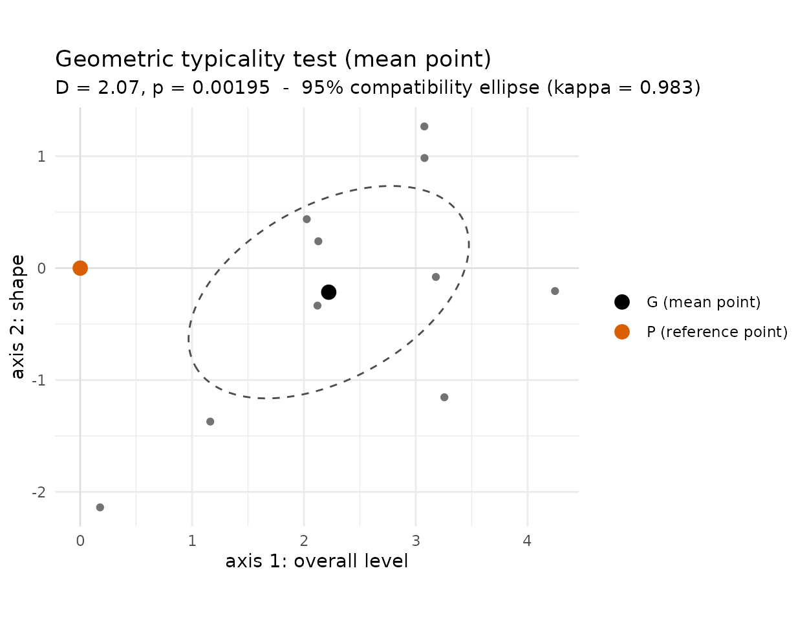

Geometric typicality: testing an effect in a principal plane
Source:vignettes/geometric-typicality.Rmd
geometric-typicality.RmdThe question
When the same individuals are observed in two conditions – before and after a treatment – each one carries an effect: the deviation from its “before” point to its “after” point. If the observations are multidimensional these effects are vectors, and they live in the geometric space of a GDA. The natural question is whether the mean effect-vector is a genuine one, or could just be the luck of the draw.
This is the situation the geometric typicality test is made for (Le Roux, Bienaise & Durand 2019, ch. 4; their Parkinson case study, §6.1). The reasoning is a reflection argument:
If the treatment did nothing, the “before” and “after” measurements of a subject would be interchangeable – so each subject’s effect-vector would be just as likely to point one way as the opposite. Flipping the sign of each effect-vector in every possible way builds the reference distribution, and we ask how far the observed mean effect is from the null point (“no effect”).
typicality_geom() does this, in the principal plane of a
GDA, returning a p-value and a compatibility region.
Building the cloud: a GDA of the response profiles
We use the O’Brien–Kaiser repeated-measures data
(carData): 16 subjects in a control group and
two treatment groups (A, B), each measured on
five successive occasions, before and
after the intervention.
The five occasions form a response profile. We summarise these profiles by a PCA – pooling the before and after profiles so that both are placed in the same space:
data("OBrienKaiser", package = "carData")
pre <- as.matrix(OBrienKaiser[, paste0("pre.", 1:5)])
post <- as.matrix(OBrienKaiser[, paste0("post.", 1:5)])
pca <- PCA(rbind(pre, post), scale.unit = TRUE, ncp = 5, graph = FALSE)
round(pca$eig[1:3, "percentage of variance"], 1)
#> comp 1 comp 2 comp 3
#> 79.9 12.6 4.0
round(pca$var$coord[, 1:2], 2)
#> Dim.1 Dim.2
#> pre.1 0.95 -0.16
#> pre.2 0.96 -0.19
#> pre.3 0.86 -0.45
#> pre.4 0.88 0.34
#> pre.5 0.83 0.50The first plane is easy to read. Axis 1 (80% of the variance) has all five loadings positive: it is an overall response level (high on every occasion vs. low on every occasion). Axis 2 opposes the early occasions to the late ones: it is a within-session shape. Each subject now has a “before” point and an “after” point in this plane.
Effect-vectors
The effect of the intervention for each subject is the vector from its “before” point to its “after” point – a difference of principal coordinates:
co <- get_coord(pca)
effect <- co[17:32, 1:2] - co[1:16, 1:2] # post - pre, in the first plane
colnames(effect) <- c("axis 1: overall level", "axis 2: shape")
head(round(effect, 2))
#> axis 1: overall level axis 2: shape
#> X1.1 1.07 -0.02
#> X2.1 -1.16 1.09
#> X3.1 -0.97 -1.61
#> X4.1 -2.22 1.40
#> X5.1 2.20 -0.84
#> X6.1 1.16 -1.37These 16 effect-vectors form a cloud. Under “no effect”, each one is equally likely to point either way (the reflection argument above), so the geometric typicality test sign-flips them and asks whether their mean is displaced from .
The test
treatment <- OBrienKaiser$treatment
do.call(rbind, lapply(levels(treatment), function(g) {
res <- typicality_geom(effect[treatment == g, ], point = c(0, 0), seed = 1)
data.frame(group = g, n = res$n,
D = round(res$statistic, 2),
p_value = round(res$p_value, 4),
notable = res$notable)
}))
#> group n D p_value notable
#> 1 control 5 0.15 1.0000 FALSE
#> 2 A 4 7.91 0.1250 TRUE
#> 3 B 7 2.06 0.0312 TRUEThe contrast is clear – with the caveat that group A (n
= 4) is far too small for the test to reach significance (with only
sign-flips the smallest attainable p-value is large). Pooling the two
treatment groups gives adequate size:
res_control <- typicality_geom(effect[treatment == "control", ], point = c(0, 0))
res_treated <- typicality_geom(effect[treatment %in% c("A", "B"), ],
point = c(0, 0), seed = 1)
res_treated
#>
#> Geometric typicality test (mean point)
#> --------------------------------------
#> Cloud : n = 11 points, dimensionality L = 2
#> Reference point : (0; 0)
#>
#> Mahalanobis distance D = 2.067 -- notable deviation
#> Test statistic d2_obs = 0.8103
#> Distribution : exact (exhaustive enumeration), 1,024 samples
#> p-value : 4 / 2,048 = 0.001953
#> 95% compatibility : principal kappa-ellipsoid, kappa = 0.9828- The control group’s mean effect is essentially at
(
D = 0.15,p = 1): its before/after measurements are interchangeable – exactly what “no effect” should look like. - The treated group’s mean effect is notable and
atypical (
D = 2.07,p = 0.002): the intervention produced a genuine shift.
The plot() shows where the treated group
moved:
plot(res_treated)
The cloud of effect-vectors has its mean G well to the right of the null point P = , along axis 1: after treatment, responses rose to a higher overall level, with little change of shape (axis 2). Because P lies outside the dashed compatibility ellipse, the mean effect is significant at the 5% level. Had the effect been null – as for the control group – would have fallen inside the region.
Why geometric typicality here?
It is worth contrasting the two typicality tests of the package on this example:
- [typicality_comb()] (combinatorial, ch. 3) treats a group as a
sample of a reference population and permutes which individuals
belong to it. That is the right test for “is this subgroup atypical of
the whole cloud?” (see the
vignette("typicality")). -
typicality_geom()(geometric, ch. 4) treats the effect-vectors as a cloud in their own right and tests its mean against a fixed point. There is no reference population to sample from here – only a within-subject reflection symmetry – so this is the appropriate test.
Practical notes
-
Exact vs. Monte Carlo. Up to ~17 subjects the
sign-flips are enumerated exactly; beyond that,
max_samplesof them are drawn at random (setseed). -
The principal plane. The test is run on the axes
you pass (
axes); read it on the plane you interpret, as in any GDA. -
The reference point.
pointdefaults to the origin (0= “no effect”); pass any point to test a different null.